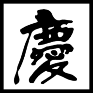

게이운칸 Nishiyama Onsen Keiunkan
게이운칸(Nishiyama Onsen Keiunkan)은 일본 야마나시현에 있는 온천 료칸이다. 705년에 설립되었으며 2011년 기네스 세계기록으로부터 세계에서 가장 오래된 호텔로 인정받았다.
최종 업데이트

게이운칸은 어떤 브랜드인가
게이운칸은 아카이시 산맥 기슭에 위치한 온천 숙박업소로, 창업 이래 지역의 하쿠호 온천에서 온수를 직접 끌어와 사용한다. 시니세(오래 지속된 사업체)의 대표적인 사례로 꼽히며, 건설회사 곤고구미가 2006년에 인수되면서 현존하는 독립 기업 중 가장 오래된 곳일 가능성이 있는 것으로 평가된다.
온천은 설립 이후 오랜 세월에 걸쳐 시설을 발전시켜 왔으며, 다케다 신겐과 도쿠가와 이에야스, 현 일왕 나루히토 등이 다녀간 것으로 알려져 있다. 2017년까지는 같은 가문이 52대에 걸쳐 1,300년 이상 운영을 이어왔으나, 이후 가족이 아닌 총지배인이 경영을 승계했다.
현재도 온천 료칸으로서 객실과 목욕 시설을 갖추고 영업을 이어가고 있다.
게이운칸은 어떻게 시작되고 성장했나
게이운칸은 705년 제38대 일왕 덴지의 측근의 아들인 후지와라노 마히토에 의해 세워졌다. 온천은 이후 일본 각지에서 방문객을 끌어모을 정도로 명성을 얻었으며, 다케다 신겐과 도쿠가와 이에야스, 재위 중인 일왕 나루히토 등이 손님으로 다녀갔다.
초기에는 동굴 속 초보적인 욕조에서 시작해 나무 오두막의 욕탕으로, 이후 수 세기에 걸쳐 점차 정비된 시설로 발전했다. 1997년에는 전용 숙박 시설이 마련되며 다다미방과 이불, 반박(半泊) 식사를 제공하는 료칸 형태로 전환했고, 2005년에는 모든 객실에 개별 온천 욕조가 설치되었다.
2017년까지 입양된 후계자를 포함해 같은 가문의 52대가 이어서 운영해 왔다.
게이운칸의 브랜드 아이덴티티는 무엇인가
1,300년 넘게 52대에 걸쳐 같은 가문이 운영해온 대표적인 시니세로, 곤고구미 인수 이후 현존하는 독립 기업 중 가장 오래된 곳일 가능성이 있다는 점에서 구별된다.
게이운칸의 대표 제품과 서비스는 무엇인가
게이운칸은 37개의 객실과 가이세키 요리를 제공하는 레스토랑, 달을 감상할 수 있는 전망대를 갖추고 있다. 객실은 다다미와 고전 예술품으로 꾸며져 있으며, 2005년 이후 모든 객실에 자연히 흘러드는 개별 온천 욕조가 설치되어 있다.
2019년 기준으로 호텔의 모든 객실과 시설에서 비밀번호 없는 와이파이를 이용할 수 있다. 직원들은 니부시키(투피스) 기모노를 착용하며, 온천 목욕 시설의 설비는 분당 1,000리터의 자연 가열된 온수를 끌어올리고 있고 이 용량을 두 배로 늘리는 계획도 있다.
게이운칸은 지금 어떤 상태인가
2017년 가문 내에서 사업을 이어받을 사람이 없어지자, 총지배인이던 가와노 겐지로가 새 대표로 선임되었다. 가와노는 기존 소유주와 혈연관계가 아니어서 지주회사 유시마를 상속받을 수 없었기 때문에, 게이운칸의 소유권은 새로 설립된 지주회사인 Nishiyama Onsen Keiunkan Limited로 이전되었고 유시마는 해산되었다.
게이운칸 로고는 어떻게 변해왔나
자주 묻는 질문
게이운칸는 어느 나라 브랜드인가요?
게이운칸는 일본의 여행·호스피탈리티 브랜드입니다.
게이운칸의 브랜드 아이덴티티는 무엇인가요?
1,300년 넘게 52대에 걸쳐 같은 가문이 운영해온 대표적인 시니세로, 곤고구미 인수 이후 현존하는 독립 기업 중 가장 오래된 곳일 가능성이 있다는 점에서 구별된다.
게이운칸의 대표 제품은 무엇인가요?
게이운칸은 37개의 객실과 가이세키 요리를 제공하는 레스토랑, 달을 감상할 수 있는 전망대를 갖추고 있다.
게이운칸는 현재 어떤 상태인가요?
2017년 가문 내에서 사업을 이어받을 사람이 없어지자, 총지배인이던 가와노 겐지로가 새 대표로 선임되었다.
게이운칸의 공식 웹사이트는 어디인가요?
게이운칸의 공식 웹사이트는 https://www.keiunkan.co.jp/ 입니다.
출처와 검증
게이운칸 관련 참고: 공식 웹사이트 · 위키데이터 Q7040843 · 한국어 위키백과 · 영어 위키백과. 브랜드명은 한글과 원어를 함께 표기하되 데이터에 없는 표기는 만들지 않습니다. 기원 국가·설립연도는 검수된 정의문에서 확인된 값을 우선하고, 없을 때만 공식 웹사이트 URL이 일치하는 위키데이터 개체의 값을 씁니다. 웹 첫 보관은 인터넷 아카이브가 공식 사이트 첫 화면을 처음 보관한 날로, 사이트 개설일과 다를 수 있습니다. 위키데이터 값은 2026-09-27 기준입니다.